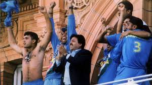

lords cricket Stadium


Location: england
Facts: Lord's Cricket Ground is known as the "Home of Cricket" and has hosted numerous historic matches.
Facts: The stadium features the iconic Lord's Pavilion, which is a symbol of cricketing heritage and tradition.